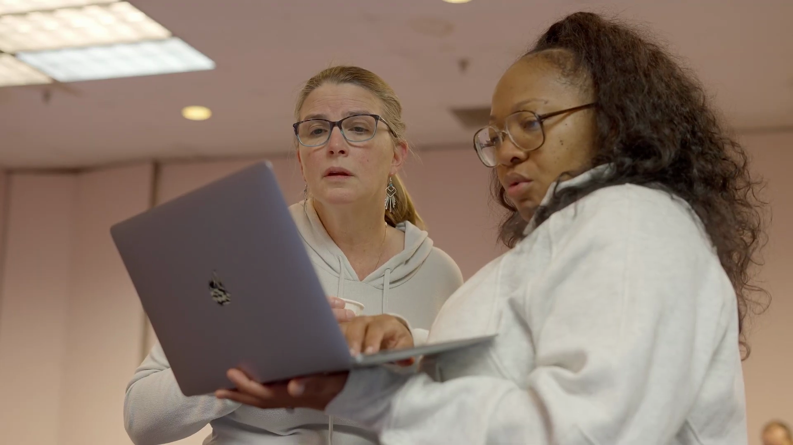

I’m exploring certification
Understand the process, explore accomplished teaching, and get your questions answered.
Get to know the processBoston educators. Shared purpose.
Your next chapter as an educator starts here. Explore National Board Certification with a community that supports you every step of the way.

A place for every stage
Whether you’re just curious or already certified, find the people and resources to move forward.
Understand the process, explore accomplished teaching, and get your questions answered.
Get to know the processFind courses, cohort support, readers, and dedicated time to develop your portfolio.
Explore candidate supportMaintain your certification, connect with peers, and share your expertise across Boston.
Find your communityStronger practice. Greater impact.
National Board Certification invites you to look closely at your teaching—and the difference it makes for your students.
The BPS/BTU National Board Program brings educators together to reflect, learn, and grow through that process.
Explore accomplished teachingPlan your next step
Dedicated writing time, experienced readers, and peer support. Dates for the 2027 cycle are pending funding.
Explore writing retreatsCurious about time, support, or the certification process? Connect with the team about an information session.
Explore information sessionsExplore the options for new candidates, returning candidates, and educators maintaining certification.
Find the right supportConnect with the National Board Leadership Team to find the right next step for you.